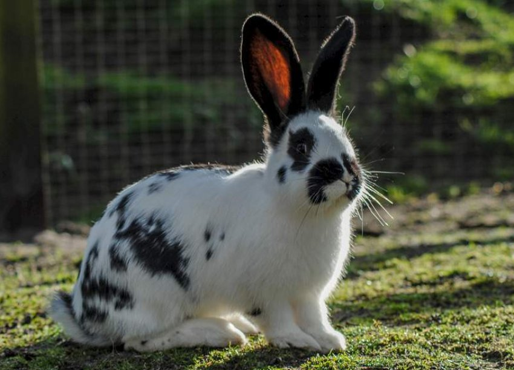
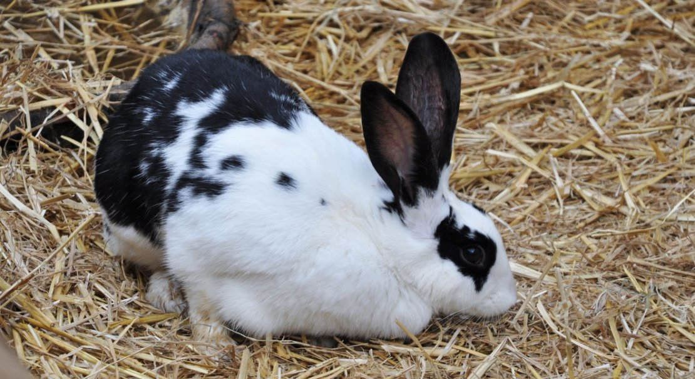
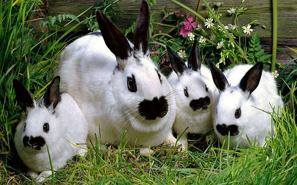

Що таке порода Метелик?
Метелик (англ. English Butterfly, нім. Schmetterlingkaninchen) — порода кролів м'ясо-шкурного напряму з характерним білим забарвленням та чорними (або кольоровими) плямами на мордочці, спині й боках. Розташування плям на носі нагадує крила метелика в польоті — звідси й назва.
Порода невибаглива в утриманні, добре адаптується до різних кліматичних умов і поєднує в собі продуктивні якості м'ясної породи з декоративною цінністю хутра. Це робить її привабливою як для промислових фермерів, так і для аматорів.
Сьогодні Метелик розводиться переважно в приватних господарствах. Попри відсутність великих племінних ферм, порода зберегла стійку популярність завдяки поєднанню невибагливості, гарного хутра та якісного м'яса.

Як виглядає Метелик

Забарвлення шерсті
Основний колір шерсті — білосніжний. На цьому фоні симетрично розміщені характерні плями. Найпоширеніше і найцінніше забарвлення — чорно-біле, але зустрічаються також синьо-сірі, блакитні, жовті і шоколадні відтінки плям.
- Дві плями по обидва боки від носа — малюнок метелика
- Темні кола навколо очей
- Темні вуха
- Симетричні бічні плями на тулубі
- Зубчаста або суцільна смуга від вух до хвоста по хребту
- Темна верхня частина хвоста
Статура і будова тіла
Порода має добре розвинений кістяк і мускулисту статуру. Самці дещо крупніші за самок, проте самки відрізняються вищою плодовитістю.
- Голова середнього розміру: у самок — подовжена, у самців — округліша і масивніша
- Тулуб довгий, мускулистий, до 57–58 см
- Груди широкі, близько 36 см в обхваті
- Спина широка і міцна
- Кінцівки сильні, добре розвинені
- Кігті безбарвні (прозорі)
Хутро
Хутро еластичне, блискуче, рівне. Не потребує додаткової обробки після знімання шкурки. Плямистий малюнок надає виробам з такого хутра виразного декоративного вигляду, що забезпечує попит на шкурки на ринку хутра.
М'ясо і шкурка
М'ясна продуктивність
М'ясо кролика породи Метелик дієтичне, ніжне, з приємним смаком. Забій проводиться у віці 3–4 місяці. Вихід м'яса при правильному відгодовуванні становить близько 50–55% від живої маси.
Завдяки схрещуванню з великими породами (Фландр, Білий велетень) м'ясні якості сучасних Метеликів суттєво покращились порівняно з вихідними англійськими екземплярами XIX ст., вага яких не перевищувала 2–3 кг.
Хутрова продуктивність
Шкурка Метелика цінується завдяки унікальному плямистому малюнку і рівній блискучій шерсті. Хутро не потребує хімічної обробки після знімання.
Утримання кроликів цілий рік просто неба помітно покращує якість і густоту волосяного покриву. Речі з хутра Метелика мають попит серед аматорів хутряних виробів.
Характер і темперамент
Порода відзначається спокійним, доброзичливим і поступливим характером. Кролики легко звикають до людини, не агресивні, добре переносять контакт — що робить їх придатними як для ферми, так і для утримання вдома.
Через лагідний характер Метелики особливо подобаються дітям.
Від декоративного до м'ясо-шкурного
Виведення породи в Англії
Англійські селекціонери вивели першу версію породи. Тварини були невеликими — вага не перевищувала 2–3 кг. Порода одразу привернула увагу незвичайним декоративним забарвленням і швидко поширилась серед кролівників-аматорів.
Поширення Європою і вдосконалення
Порода потрапляє до континентальної Європи. Для підвищення живої маси і м'ясної продуктивності Метелика схрещують з великими породами: Білий велетень, Фландр, Віденський блакитний і Шиншила. У результаті виходить масивніша і продуктивніша порода.
Поява нових різновидів
На основі вихідної англійської форми виводяться нові породи: Французький метелик, Німецький метелик, Чехословацький строкатий. Жива вага вдосконалених порід досягає 4–5 кг.
Статус породи в Україні
Метелик поширений серед кролівників-аматорів та невеликих приватних господарств. Великих племінних ферм із цією породою немає, що ускладнює централізовану селекційну роботу. Попри це, порода зберігає популярність завдяки невибагливості та поєднанню м'ясних і хутрових якостей.
Умови утримання
Метелик — одна з найменш вибагливих порід щодо умов утримання. Тварини добре адаптуються до різних кліматичних умов і спокійно переносять перепади температур. Цілорічне утримання просто неба позитивно впливає на густоту і якість шерсті.
Вимоги до клітки
- Площа підлоги — не менше 0,5 м² на дорослу особину
- Висота клітки — не менше 40–45 см
- Покриття підлоги: рейкова підлога або солома; суцільна сітка без підстилки шкодить лапам
- Наявність маточника для самки з кроленятами
- Захист від протягів і прямого сонця влітку
- Утеплення в морозні зими (температура не нижче −15°C)
Гігієна і профілактика
- Чищення клітки — не рідше 2 разів на тиждень
- Дезінфекція — раз на місяць
- Вакцинація від міксоматозу і ВГХК — обов'язкова
- Регулярний огляд зубів, кігтів, вух
- Ізоляція хворих тварин від загального поголів'я
Важливо
Цілорічне утримання на відкритому повітрі помітно покращує якість шерсті. Тварини, що живуть в умовах природного температурного режиму, дають більш густий і блискучий хутряний покрив порівняно з утриманням у теплих закритих приміщеннях.
Раціон і режим харчування
Метелик не вимогливий до корму, однак правильно збалансований раціон визначає якість м'яса та хутра, а також репродуктивну спроможність тварин.
Груба клітковина
- Сіно (злакове або бобове) — основа раціону, доступне цілодобово
- Гілки фруктових, верболозових дерев — стачують зуби
- Солома ячмінна або пшенична — як наповнювач
Концентрати
- Зернові суміші: ячмінь, пшениця, кукурудза, овес
- Комбікорм для кролів
- Висівки пшеничні — покращують травлення
- Соєвий шрот або макуха соняшникова — протеїн (обмежено)
Соковиті корми
- Морква — цінне джерело каротину
- Яблуко — невеликими порціями
- Буряк кормовий (цукровий — обмежено)
- Кабачок, гарбуз
- Свіжа трава: тимофіївка, конюшина, кропива (ошпарена)
Вода і мінерали
- Чиста вода — цілодобово
- Крейда кормова і кісткове борошно — кальцій і фосфор
- Сіль-лизунець — мінеральний баланс
- Вітамінні добавки — в осінньо-зимовий період
Основні правила годування
Годувати не рідше двох разів на добу. Тільки регулярне харчування гарантує хорошу якість м'яса і шкурки.
Не перегодовувати. Ожирілі самці погано покривають самок, а самки не вигодовують потомство.
Категорично не давати зіпсовані або цвілі продукти — призводять до здуття кишечника і загибелі.
В клітці завжди мають бути тверді предмети для стачування зубів: гілки, морква, яблуко.
Розмноження і приплід
Метелики відносяться до порід з достатньо високою репродуктивною продуктивністю. За один виводок самка народжує від 6 до 8 кроленят, що є хорошим показником для породи такого розміру.
Статева зрілість і перше парування
Самка досягає репродуктивної готовності у 6–7 місяців. Ознаки готовності: самка метушливо готує підстилку, розкладає по кутах клітки власний пух. Для парування самку підсаджують у клітку до самця. Після завершення процедури самку одразу повертають у власну клітку.
Вагітність і окріл
- Тривалість вагітності — близько 30 днів (28–33 дні)
- Кількість кроленят у виводку — 6–8 голів
- Під час пологів забезпечити велику кількість питної води — при дефіциті самка може поїсти кроленят
- Кроленята народжуються сліпими і голими, покриваються шерстю на 5–7 день
- Відлучення від матері — у 28–30 днів
Рекомендований графік окролів
Більш часте парування призводить до швидкого виснаження кролиць. Рекомендується не більше 3–4 окролів на рік.
Відбір для розведення
Для розмноження відбирають тварин з найкращим вираженням породних ознак: чіткий симетричний малюнок, правильна статура, відповідна вага. Схрещування з іншими породами змінює характерний малюнок і знижує цінність шкурок — рекомендується чистопородне розведення.

Породи групи Метелик
На основі оригінального англійського Метелика виведено кілька самостійних порід, що відрізняються забарвленням, вагою та стандартами.
Німецький Метелик
Вагоміша порода (4,5–5,5 кг). Покращені м'ясні якості, збережений класичний чорно-білий малюнок. Найбільш поширений у промисловому розведенні.
Англійський Метелик
Вихідна форма. Менший за масою (3–4 кг), зі складним класичним малюнком. Існує також різновид з блакитно-шиншиловою плямистістю — «блакитна» форма.
Французький Метелик
Повністю білий окрас — без плям, тільки чорний обідок навколо очей і темні вуха та верхня частина хвоста. Найбільш відхилений від класичного стандарту малюнку.
Чехословацький строкатий
Рябо-білий, без плям на носі. Відрізняється від інших різновидів характером розміщення забарвлення по тулубу. Середній за вагою (4–4,5 кг).
Переваги і недоліки породи
Переваги
- Невибагливість в утриманні — легко адаптується до різних умов
- Не потребує великої кількості корму
- Спокійний, добрий характер — підходить для контакту з дітьми
- Цінне декоративне хутро, що не потребує додаткової обробки
- Якісне дієтичне м'ясо
- Висока плодовитість — 6–8 кроленят за виводок
- Можливість утримання як декоративної тварини в домашніх умовах
- Швидкий набір ваги при правильному відгодовуванні
Недоліки
- Надмірно масивна підгрудна частина тулуба — естетичний недолік стандарту
- При схрещуванні з іншими породами змінюється характерний малюнок і знижується якість шкурок
- При нестачі води або поганому харчуванні самки можуть поїдати власне потомство
- Відсутність великих племінних ферм ускладнює придбання якісного племінного матеріалу
- Поширення переважно в аматорських господарствах ускладнює централізовану селекцію
Метелик — порода для тих, хто цінує поєднання краси і продуктивності
Невибагливий у догляді, продуктивний по м'ясу і шкурці, з унікальним забарвленням — ця порода однаково підходить як для невеликого фермерського господарства, так і для утримання як домашнього улюбленця.